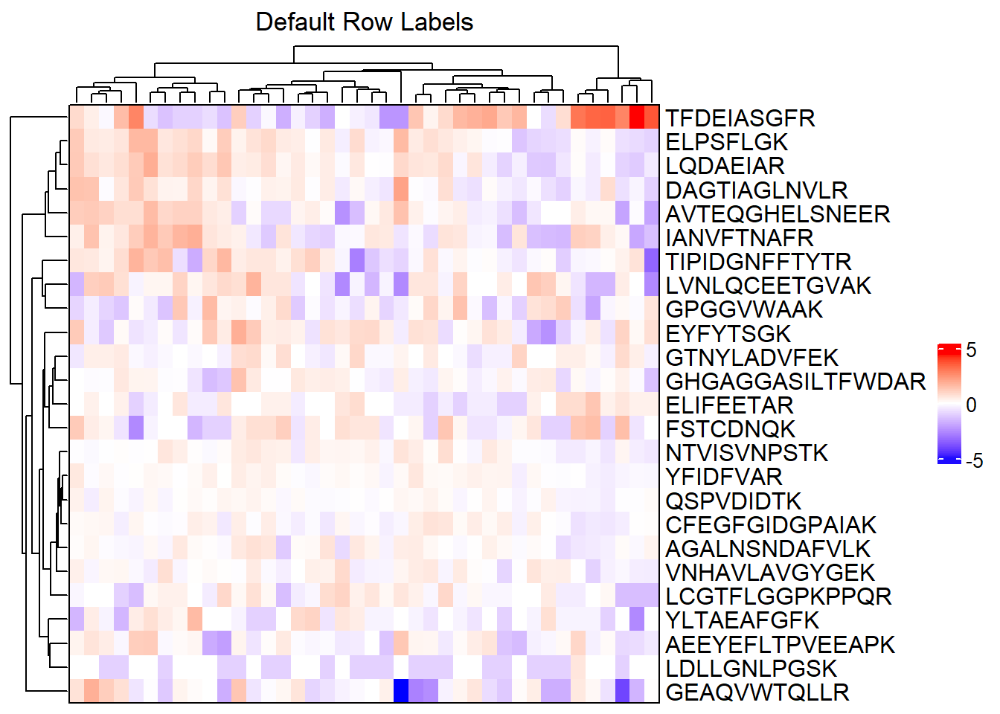
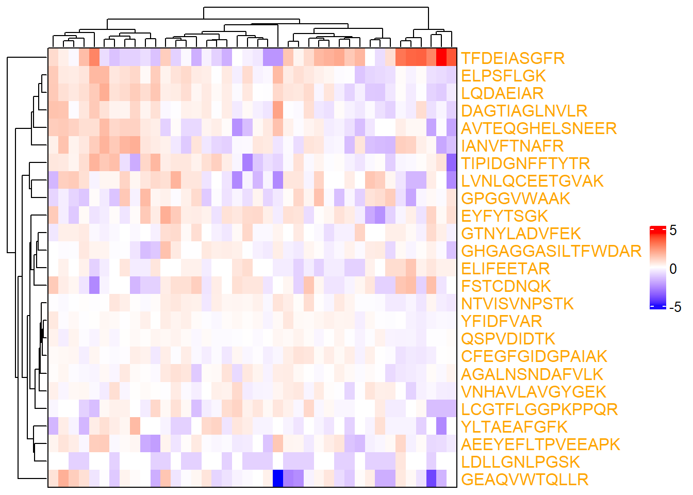
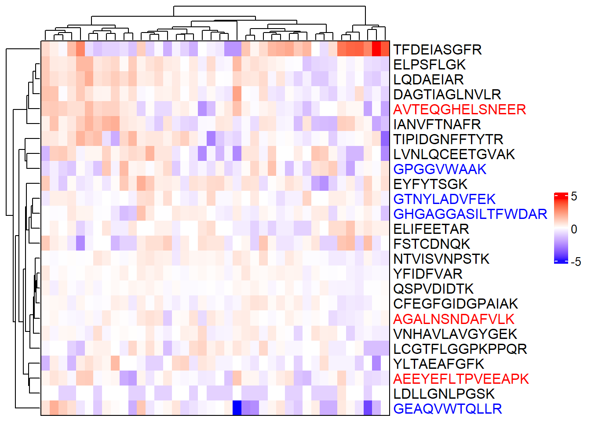
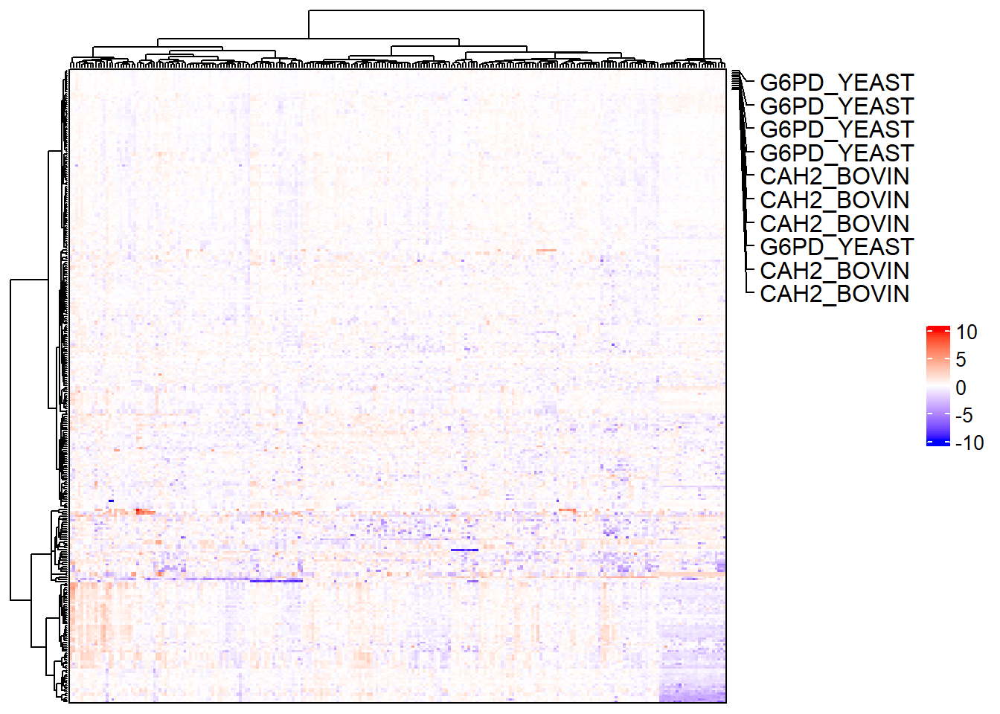
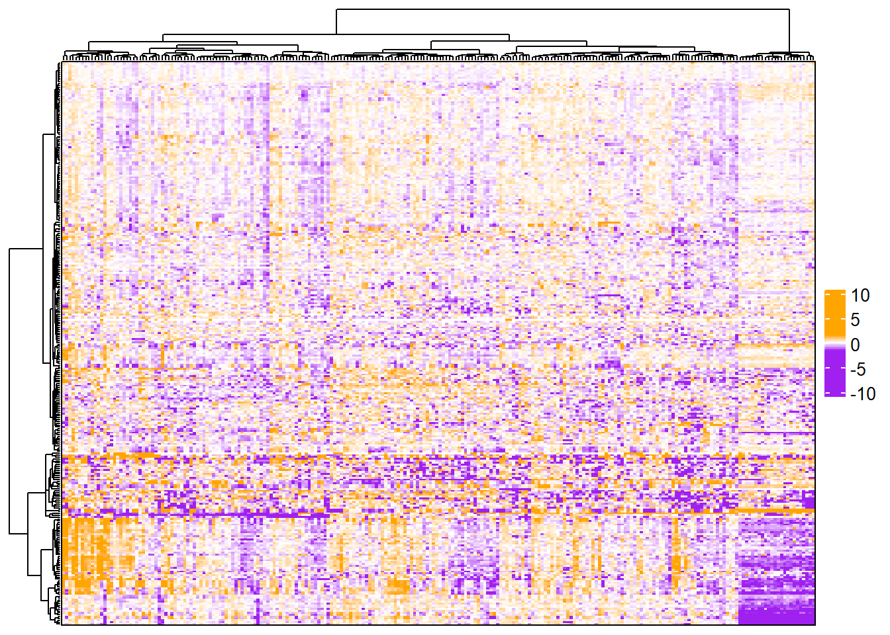
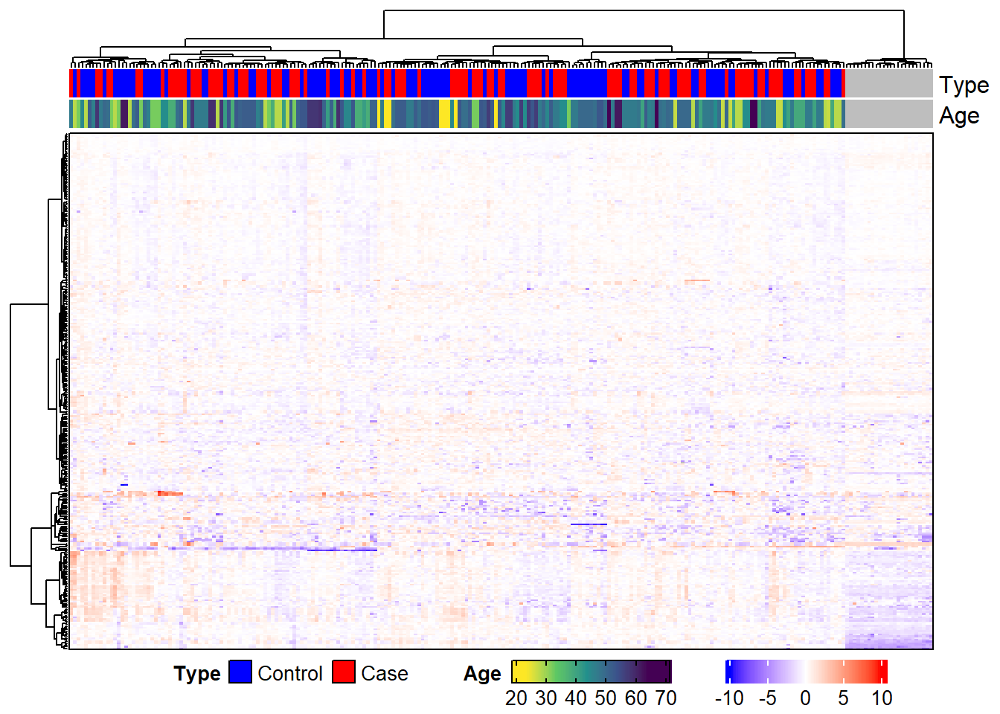

6.4 Modifications
heatmap_args and anno_args are used to modify the heatmaps: changing the row and column labels, labeling specific features, changing the colors of labels, changing font size, adding different types of annotations, splitting rows or columns into groups, etc. The ComplexHeatmap Complete Reference goes more into detail about each of these modifications, but we will cover a few of them in this section.
We will use a random subset of the MSnSet to explore some of these modifications. This is just so we can see the row and column names more easily.
set.seed(99)
# subset to 25 features and 40 samples
m_sub <- m[sample(1:nrow(m), size = 25),
sample(1:ncol(m), size = 40)]6.4.1 Row and column labels
By default, the row and column labels are the row and column names of the matrix passed to Heatmap. In the case of the default expression heatmap, the row names are the featureNames of the MSnSet and the column names are the sampleNames. We can instead use any column in fData and any column in pData to label the rows and columns, respectively. Duplicate labels are also allowed, which is especially useful if there are multiple peptides that map to the same protein, multiple proteins that map to the same gene, etc.
# Default row labels - peptides
complex_heatmap(m_sub, show_row_names = TRUE,
heatmap_title = "Default Row Labels")
Suppose, for example, we want to label the rows by the Protein column of fData(m_sub). We can do this by modifying the row_labels argument of ComplexHeatmap::Heatmap with the heatmap_args list. We will also reduce the font size of the labels so that they do not overlap.
# Label rows with proteins and change font size
complex_heatmap(m_sub, show_row_names = TRUE,
heatmap_title = "New Row Labels",
heatmap_args = list(row_labels = fData(m_sub)[["Protein"]],
# Change font size of row labels
row_names_gp = gpar(fontsize = 10)))
6.4.2 Label colors
# One color
complex_heatmap(m_sub, show_row_names = TRUE,
heatmap_args = list(row_names_gp = gpar(col = "orange")))
# Multiple colors
# If peptide begins with "A", color it red
# If peptide begins with "G", color it blue
# Otherwise, color it black
row_colors <- featureNames(m_sub) %>%
{case_when(grepl("^A", .) ~ "red",
grepl("^G", .) ~ "blue",
TRUE ~ "black")}
complex_heatmap(m_sub, show_row_names = TRUE,
heatmap_args = list(
row_names_gp = gpar(col = row_colors)))
6.4.3 Label specific features
We can use mark annotation to label specific features or samples. For this example, we will label all non-human proteins. We need the indices of the proteins to label and the column in fData used to select these labels.
# Indices of non-human proteins
idx <- which(!grepl("HUMAN", fData(m)[["Protein"]]))
# Row annotation object. The name can be anything, so we just use anno
ra <- rowAnnotation(anno = anno_mark(at = idx,
labels = fData(m)[["Protein"]][idx]))
# Heatmap with labels for select features
complex_heatmap(m, heatmap_args = list(row_labels = fData(m)[["Protein"]],
right_annotation = ra))
6.4.4 Heatmap body color
complex_heatmap(m, heatmap_args = list(col = circlize::colorRamp2(
breaks = c(min(exprs(m), na.rm = TRUE), 0,
max(exprs(m), na.rm = TRUE)),
colors = c("purple", "white", "orange")
))
)
If changing the colors of the heatmap body, color_range will not work. Instead, the breaks and colors need to be modified so that the minimum value and the lower limit are the same color and the maximum value and the upper limit are the same color.
complex_heatmap(m, heatmap_args = list(col = circlize::colorRamp2(
breaks = c(min(exprs(m), na.rm = TRUE),
-1.5, 0, 1.5, # add color limits
max(exprs(m), na.rm = TRUE)),
colors = c("purple", "purple", "white", "orange", "orange")
))
)
6.4.5 Horizontal heatmaps
To create a horizontal heatmap, we need to take the transpose of the MSnSet. This will switch the phenoData and featureData. We will also reverse the order of the rows prior to the transpose so that the heatmap would appear to be rotated 90 degrees if samples were not clustered.
# Rotate MSnSet
m_rot <- t(m[, ncol(m):1])
m_rot## MSnSet (storageMode: lockedEnvironment)
## assayData: 236 features, 300 samples
## element names: exprs
## protocolData: none
## phenoData
## sampleNames: NTVISVFGASGDLAK TFPALFGLFR ... LLAEPVPGIK (300 total)
## varLabels: Organism Protein Peptide isSpike
## varMetadata: labelDescription
## featureData
## featureNames: QC.24 QC.23 ... X03_C_B (236 total)
## fvarLabels: Sample isQC ... Age (12 total)
## fvarMetadata: labelDescription
## experimentData: use 'experimentData(object)'
## Annotation:
## - - - Processing information - - -
## Subset [308,236][300,236] Fri Nov 9 15:22:49 2018
## Subset [300,236][300,236] Fri Feb 11 23:08:12 2022
## MSnSet transposed [Fri Feb 11 23:08:12 2022]
## MSnbase version: 2.7.11We will annotate rows to show that it worked.
# Horizontal heatmap with row annotations
complex_heatmap(m_rot, anno_row = "Age")
6.4.6 Legends
Modifying legends with draw_args, heatmap_args, and anno_args. Below, we change the direction of the heatmap legend and continuous annotation legends to horizontal, change position of annotation titles to top left, and set the number of rows for discrete annotation legends to 1. We also change the width of the “Age” legend to 28 mm, move the legends to the bottom of the heatmap, and set the space between the legends to 10 mm.
# Horizontal legends at the bottom
complex_heatmap(m, anno_column = c("Type", "Age"),
# horizontal heatmap legend
heatmap_args = list(
heatmap_legend_param = list(direction = "horizontal")
),
# horizontal annotation legend
anno_args = list(
annotation_legend_param = list(
title_position = "lefttop",
legend_width = unit(28, "mm"),
direction = "horizontal", # for continuous legends
nrow = 1 # for discrete legends
)
),
# Place legends at bottom of heatmap
draw_args = list(heatmap_legend_side = "bottom",
legend_gap = unit(10, "mm"))
)